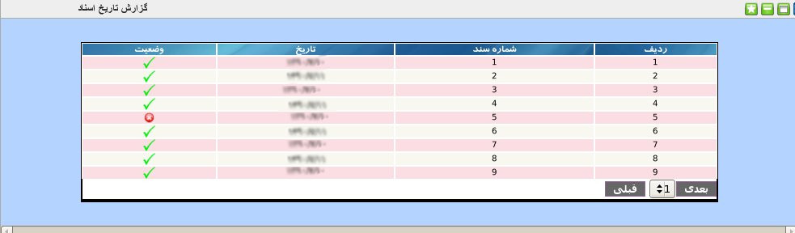

۱-گزارش تاریخ اسناد
یکی از گزارش های مورد نیاز مدیران گزارشگیری بر اساس تاریخ اسناد می باشد. این پنل به منظور تسریع و تسهیل عملکرد مدیران طراحی شده است. جدولی که مشاهده می شود شامل شماره سند, تاریخ سند و وضعیت فعال یا عدم فعال بودن سند می باشد.
